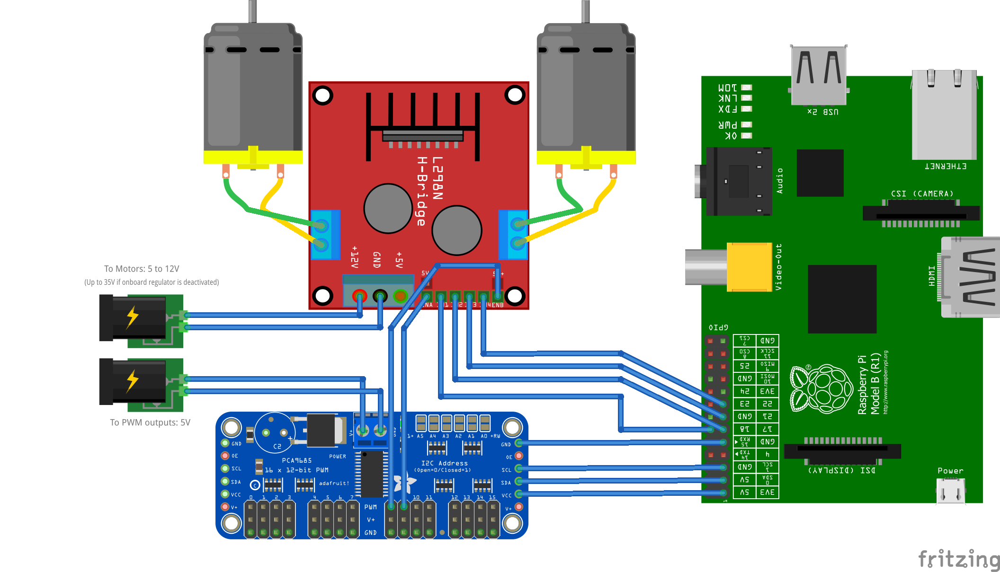

Chapter 4 Theory
This section is a collection of theory and concepts
4.1 Wiring of PCA9685 with L298N H-bridge
Since the raspberry pi PWM signal is not very stable the I2C interface is used to connect to to the servo driver PCA9685.
If a higher voltage is needed the motor driver L298N H-bridge can be utilized.
Each H-Bridge requires two additional signals:
- turn motor CW
- turn motor CCW
- no signal => motor brakes
https://www.npmjs.com/package/node-red-contrib-pca9685

4.2 sensor fusion of LIDAR and camera data
Paper by Varuna De Silva, Jamie Roche, and Ahmet Kondoz, Senior Member, IEEE Fusion of LiDAR and Camera Sensor Data for Environment Sensing in Driverless Vehicles
This paper addresses the problem of fusing the outputs of a LiDAR scanner and a wide-angle monocular image sensor. The first part of the proposed framework spatially aligns the two sensor data streams with a geometric model. The resolutions of the two sensors are quite different, with the image sensor having a much denser spatial resolution. https://arxiv.org/pdf/1710.06230.pdf